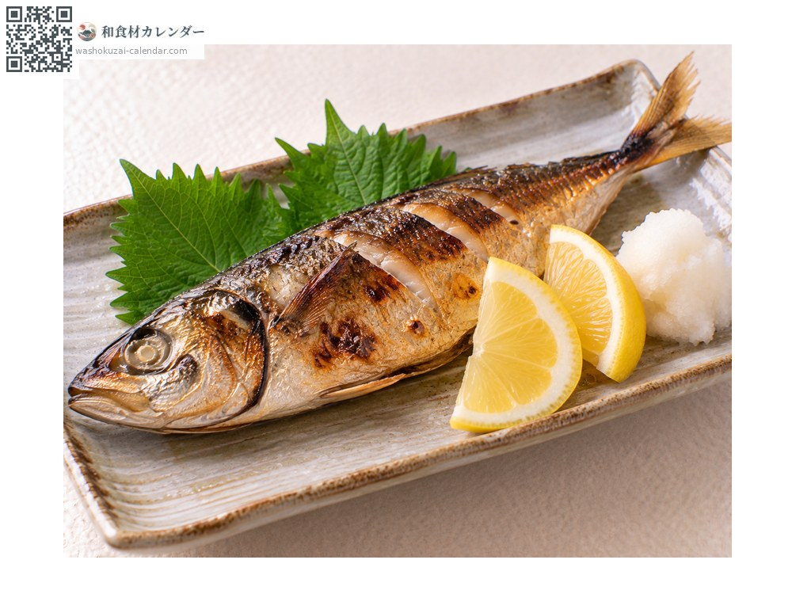
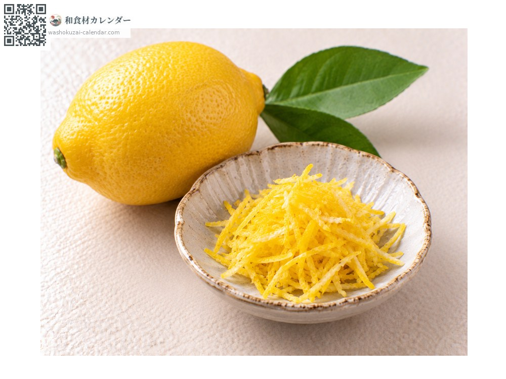
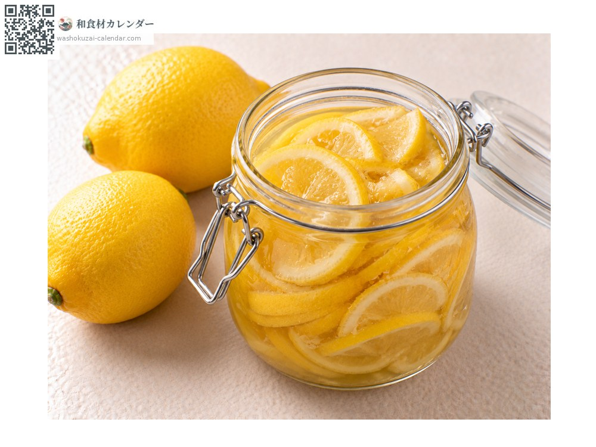
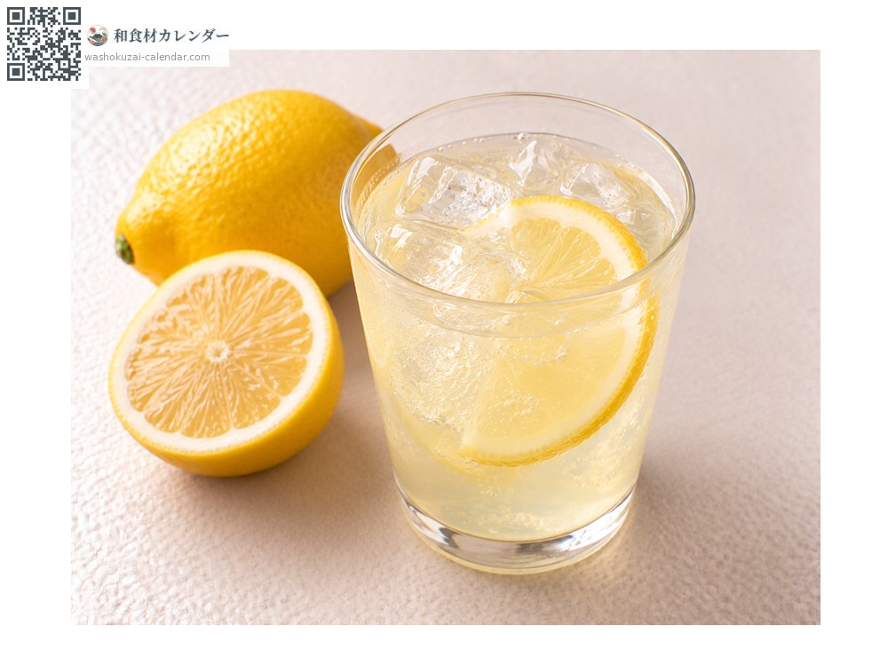

Fruit
Lemon
レモン れもん
At its best in Jan, Feb, Nov, Dec

When it is at its best
Jan
Feb
Mar
Apr
May
Jun
Jul
Aug
Sep
Oct
Nov
Dec
In seasonAvailable
How to cook

Over grilled fish
Squeezed over the fish; it suits fried dishes too.

Shredded peel
The zest pared thin for its scent; Japanese lemons can be used skin and all.

Salt-cured lemon
Cured in salt as a seasoning, which adds depth to a dish.

Lemonade
Pressed and mixed with honey.
How to choose
Taut, glossy skin, heavy in the hand, with a green stem.
Storage
Bag and refrigerate. Paring the zest and freezing it makes it easy to use.
Main areas
Good to know
Hiroshima grows more than half the national crop, and Setoda is particularly known. Unlike imported fruit, Japanese lemons carry no post-harvest fungicide, so the peel can be used, which is their great strength. Green lemons are sharper in both acidity and scent.